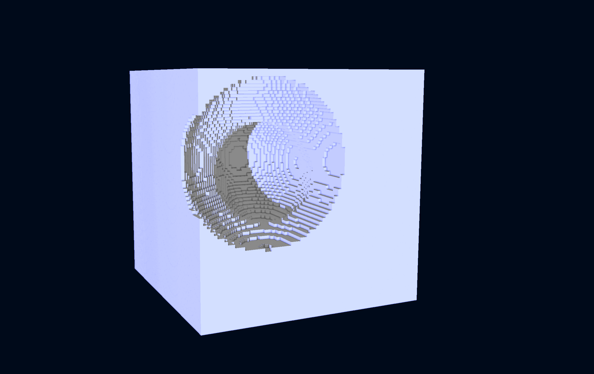
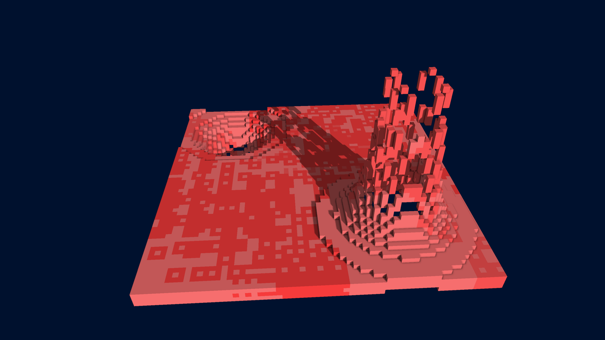
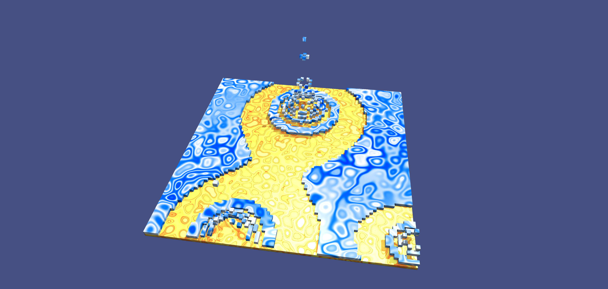
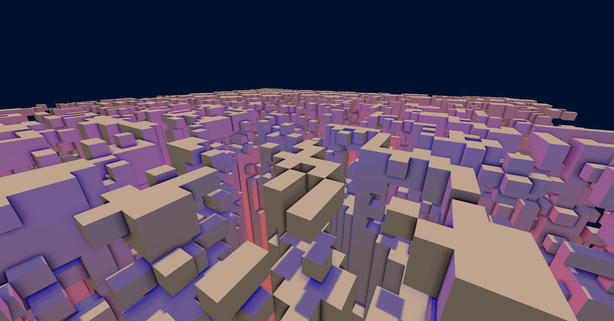
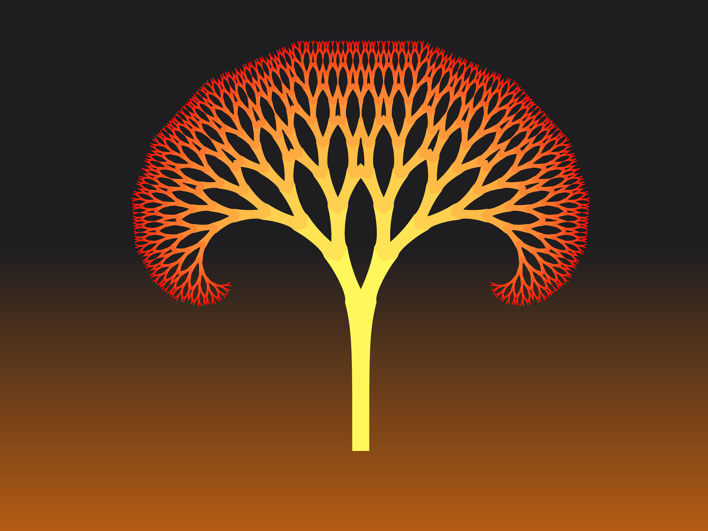
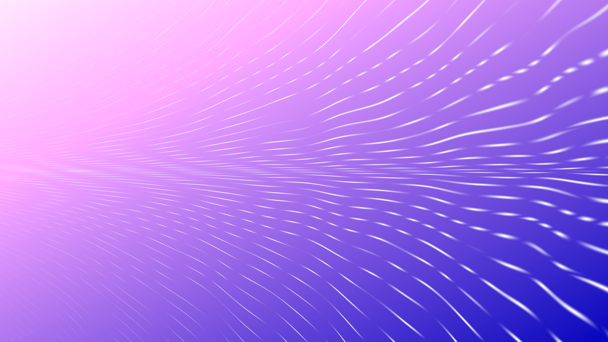
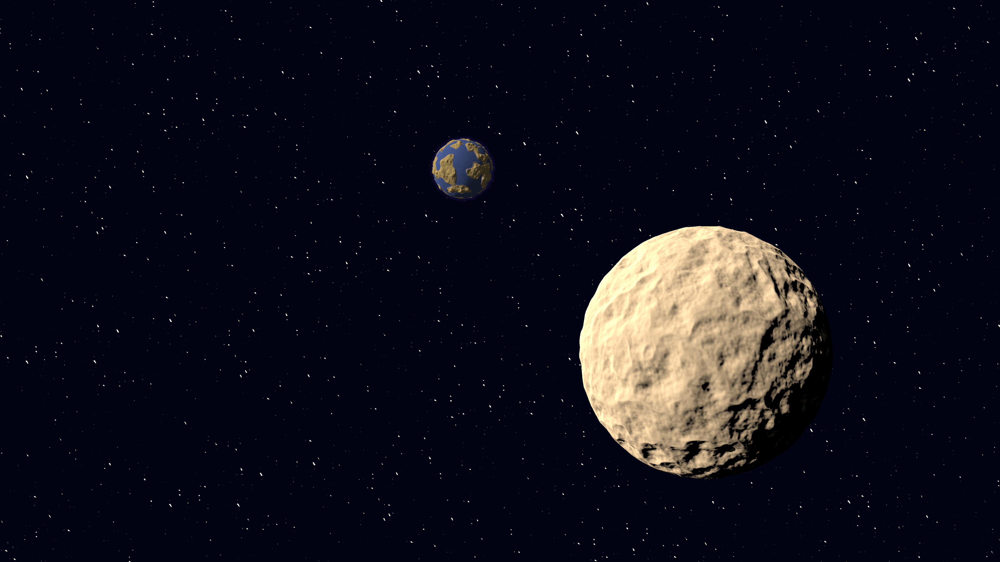
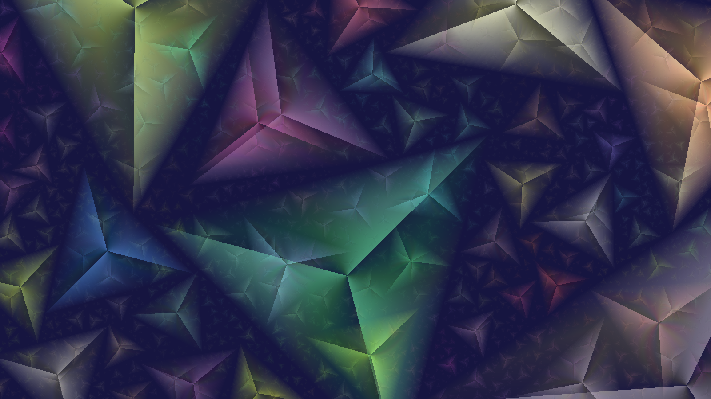

Django
https://github.com/JulesFouchy/Django
Django is a VJing app based on a particle system. You can play with many settings and shapes, record yourself and export HD videos. It is my biggest project so far.
Imacubes
https://github.com/JulesFouchy/IMACUBES/
Imacubes is a voxel editor offering a few tools and procedural terrain generation, supporting custom shaders, shadows and ambient occlusion.
It is my most recent school project.
Here are a few images I made with it :





Tangram
https://github.com/JulesFouchy/Tangram2
Tangram is a 2D image software mainly focused on the possibility to write your own fragment shaders (in a Shadertoy-like fashion).
I am currently rewritting it from the ground up with an ECS architecture and more solid basis before moving on to more functionalities.
Here are of few images I made using Tangram :



Playing around with ray marching :

Mirrors, Lasers & Robots
https://github.com/guillaume-haerinck/imac-tower-defense
Mirrors, Lasers & Robots is a tower defense game based on redirecting lasers through mirrors.
It was a school project developed as two.
Shader Art
A small experimentation with shaders and 2D distance fields.
Processing Art
A Processing script that takes a photo and repaints it in an impressionist style.
Two animations I made entirely in Processing with basic primitives and a few curves.
